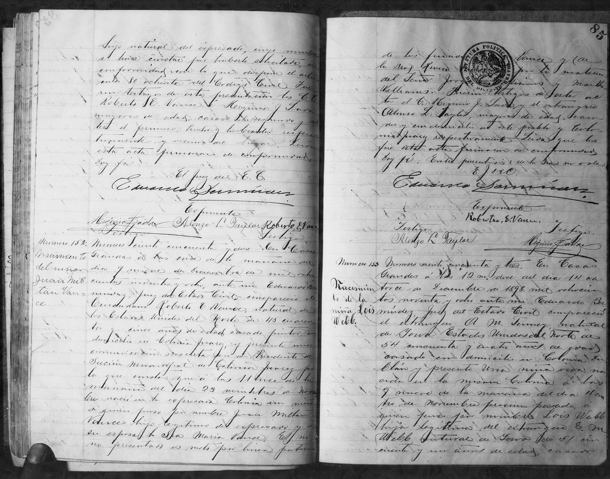
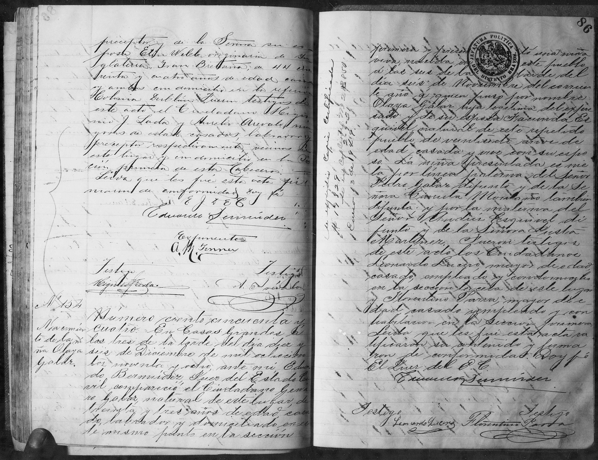

Lois Webb’s birth, registered 14 December 1898 at Casas Grandes. Entry 153 begins at the lower right of the first image and continues at the upper left of the second.

View archival page
View archival pageNumero 153 Nacimiento de la niña Lois Webb. Numero ciento cincuenta y tres. En Casas Grandes á las 12 m. doce del dia 14 ca- torce de Diciembre de 1898 mil ochocien- tos noventa y ocho ante mí Eduardo Ber- múdez Juez del Estado Civil compareció el extranjero A. M. T[illegible]ey, natural de Iowa Estados Unidos del Norte de 54 cincuenta y cuatro años de edad casado con domicilio en Colonia Du- blán y presentó una niña viva na- cida en la misma Colonia á las 9 nueve de la mañana del dia 4 cua- tro de Noviembre próximo pasado, á quien puso por nombre Lois Webb hija legítima del extranjero E. M. Webb natural de Iowa de 51 cin- cuenta y un años de edad, casado preceptor y de la Señora su es- posa Ella Webb, originaria de In- glaterra Gran Bretaña, de 44 cua- renta y cuatro años de edad casada y ambos con domicilio en la referida Colonia Dublán. Fueron testigos de este acto el Ciudadano [illegible] [illegible] J. L[illegible] y Aurelio Ar[illegible], ma- yores de edad casados, labrador y preceptor respectivamente, vecinos de este lugar y con domicilio en la Se- cción primera de esta Cabecera. Leida que les fue esta acta fir- maron de conformidad Doy fé C J d E C Eduardo Bermúdez Exponente A. M. T[illegible]ey Testigo [illegible] Testigo A. Ar[illegible]
Number 153 Birth of the girl Lois Webb. Number one hundred fifty-three. In Casas Grandes at 12 noon on the four- teenth of December 1898, one thousand eight hundred ninety-eight, before me, Eduardo Ber- múdez, Civil Registrar, appeared the foreigner A. M. T[illegible]ey, a native of Iowa, United States of North America, 54, fifty-four years of age, married, residing in Colonia Du- blán, and presented a living girl born in that same colony at 9, nine in the morning, on the fourth of last November, to whom he gave the name Lois Webb, legitimate daughter of the foreigner E. M. Webb, native of Iowa, 51, fifty- one years of age, married, schoolteacher, and of his wife Mrs. Ella Webb, originally from En- gland, Great Britain, 44, forty- four years of age, married, both residing in the aforementioned Colonia Dublán. Witnesses to this act were Citizen [illegible] [illegible] J. L[illegible] and Aurelio Ar[illegible], adults, married, farmer and schoolteacher respectively, residents of this place, domiciled in the first section of this municipal seat. This act having been read to them, they signed in agreement. I attest. Citizen Civil Registrar [abbreviated] Eduardo Bermúdez Declarant A. M. T[illegible]ey Witness [illegible] Witness A. Ar[illegible]